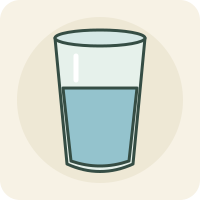
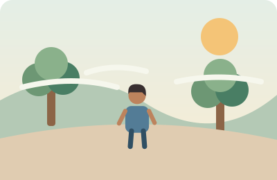
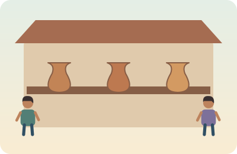
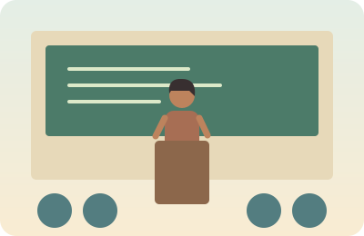

पुस्तक 03 · मध्यम हिंदीभाषा से
भाषा से
विचार तक।
भाषा का विश्लेषण करें। साहित्य पढ़ें। अपने विचार तर्क और प्रमाण के साथ व्यक्त करें।
Book 03 · Class 4–6 inspired · Independent intermediate readerअकआ


4भाग
40अध्याय
80पाठ
40कार्यपत्रक
मेरी प्रगति
0 / 80Saved on this device. No account needed.
प्रवेश: प्रारंभिक हिंदी या समान पठन और व्याकरण ज्ञान। पहले भाषा की संरचना समझें, फिर साहित्य, पठन-बोध और स्वतंत्र लेखन का अभ्यास करें। Draft curriculum; adult guidance and Hindi educator review recommended.
विषय-सूची
Table of contentsभाग 01 · PHASE 1
भाषा और व्याकरण
शब्द, पद, क्रिया, काल और कारक की गहरी समझ।
Language & grammar01भाषा और संप्रेषण
Language and communication2 पाठ · 1 कार्यपत्रक
पढ़ें → 02
02वर्ण, ध्वनि और वर्तनी
Sounds and spelling2 पाठ · 1 कार्यपत्रक
पढ़ें → 03
03शब्द निर्माण और शब्दकोश
Word formation and dictionary2 पाठ · 1 कार्यपत्रक
पढ़ें → 04
04संज्ञा के भेद
Types of nouns2 पाठ · 1 कार्यपत्रक
पढ़ें →05सर्वनाम के भेद
Types of pronouns2 पाठ · 1 कार्यपत्रक
पढ़ें → 06
06विशेषण और तुलना
Adjectives and comparison2 पाठ · 1 कार्यपत्रक
पढ़ें →07लिंग और वचन का मेल
Agreement2 पाठ · 1 कार्यपत्रक
पढ़ें → 08
08क्रिया के प्रकार
Types of verbs2 पाठ · 1 कार्यपत्रक
पढ़ें → 09
09काल और पक्ष
Tense and aspect2 पाठ · 1 कार्यपत्रक
पढ़ें →
10कारक और परसर्ग
Case and postpositions2 पाठ · 1 कार्यपत्रक
पढ़ें →भाग 02 · PHASE 2
शब्द और वाक्य कौशल
उपसर्ग, प्रत्यय, मुहावरे और शुद्ध वाक्य।
Word & sentence skills 11
11अव्यय और संयोजक
Indeclinables and connectors2 पाठ · 1 कार्यपत्रक
पढ़ें →12उपसर्ग
Prefixes2 पाठ · 1 कार्यपत्रक
पढ़ें →13प्रत्यय
Suffixes2 पाठ · 1 कार्यपत्रक
पढ़ें → 14
14पर्यायवाची, विलोम और शब्द-चयन
Synonyms and antonyms2 पाठ · 1 कार्यपत्रक
पढ़ें →15मुहावरे और लोकोक्तियाँ
Idioms and proverbs2 पाठ · 1 कार्यपत्रक
पढ़ें →16वाक्य के प्रकार
Sentence functions2 पाठ · 1 कार्यपत्रक
पढ़ें →17वाक्य विस्तार और संयोजन
Sentence expansion2 पाठ · 1 कार्यपत्रक
पढ़ें →18विराम चिह्न और संवाद
Punctuation and dialogue2 पाठ · 1 कार्यपत्रक
पढ़ें →19अशुद्धि शोधन
Error correction2 पाठ · 1 कार्यपत्रक
पढ़ें →20व्याकरण समेकित अभ्यास
Grammar review2 पाठ · 1 कार्यपत्रक
पढ़ें →भाग 03 · PHASE 3
साहित्य और पठन-बोध
कहानी, कविता, प्रकृति, विज्ञान और समाचार।
Literature & comprehension 21
21अपठित गद्यांश
Reading comprehension2 पाठ · 1 कार्यपत्रक
पढ़ें → 22
22कहानी की रचना
Story structure2 पाठ · 1 कार्यपत्रक
पढ़ें →
23प्रकृति पर वर्णन
Descriptive prose2 पाठ · 1 कार्यपत्रक
पढ़ें → 24
24पर्यावरण और जल
Environmental reading2 पाठ · 1 कार्यपत्रक
पढ़ें →
25लोककथा और संस्कृति
Folk tales and culture2 पाठ · 1 कार्यपत्रक
पढ़ें → 26
26कविता और लय
Poetry and rhythm2 पाठ · 1 कार्यपत्रक
पढ़ें → 27
27यात्रा वृत्तांत
Travel writing2 पाठ · 1 कार्यपत्रक
पढ़ें → 28
28विज्ञान और सूचना
Informational prose2 पाठ · 1 कार्यपत्रक
पढ़ें → 29
29समाचार और सूचना-पठन
News and notices2 पाठ · 1 कार्यपत्रक
पढ़ें →30
साहित्य और पठन पुनरावृत्ति
Reading synthesis2 पाठ · 1 कार्यपत्रक
पढ़ें →भाग 04 · PHASE 4
लेखन और स्वतंत्र अभिव्यक्ति
पत्र, प्रस्तुति, अनुवाद और स्वतंत्र परियोजना।
Writing & expression31अनुच्छेद लेखन
Paragraph writing2 पाठ · 1 कार्यपत्रक
पढ़ें →32पत्र लेखन
Letter writing2 पाठ · 1 कार्यपत्रक
पढ़ें →33ईमेल और संदेश
Digital writing2 पाठ · 1 कार्यपत्रक
पढ़ें →34
संवाद और साक्षात्कार
Dialogue and interview2 पाठ · 1 कार्यपत्रक
पढ़ें →
35भाषण और प्रस्तुति
Speaking and presentations2 पाठ · 1 कार्यपत्रक
पढ़ें →36
मत, तर्क और चर्चा
Opinion and reasoning2 पाठ · 1 कार्यपत्रक
पढ़ें → 37
37रचनात्मक लेखन
Creative writing2 पाठ · 1 कार्यपत्रक
पढ़ें →38
अनुवाद और अभिव्यक्ति
Translation basics2 पाठ · 1 कार्यपत्रक
पढ़ें →39स्वतंत्र परियोजना
Independent language project2 पाठ · 1 कार्यपत्रक
पढ़ें →40समेकित अंतिम अभ्यास
Final integrated review2 पाठ · 1 कार्यपत्रक
पढ़ें →अब आगे क्या?
अंतिम अध्याय में अपने पढ़ने, लिखने, बोलने और सुनने का अभ्यास जाँचें।
अंतिम अभ्यास → अगली किताब · मौजूदा उन्नत पाठ